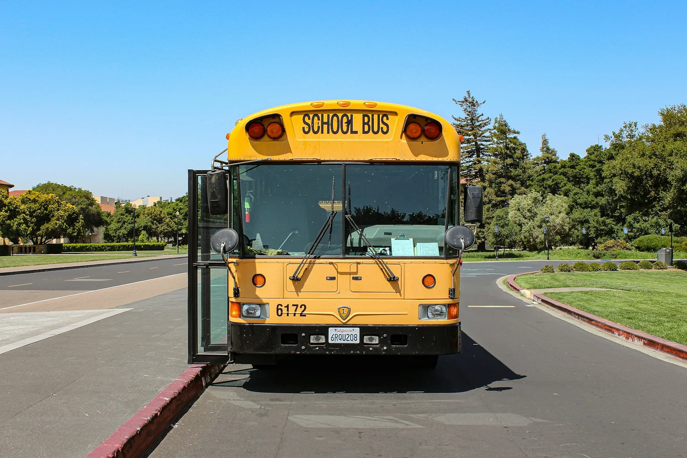
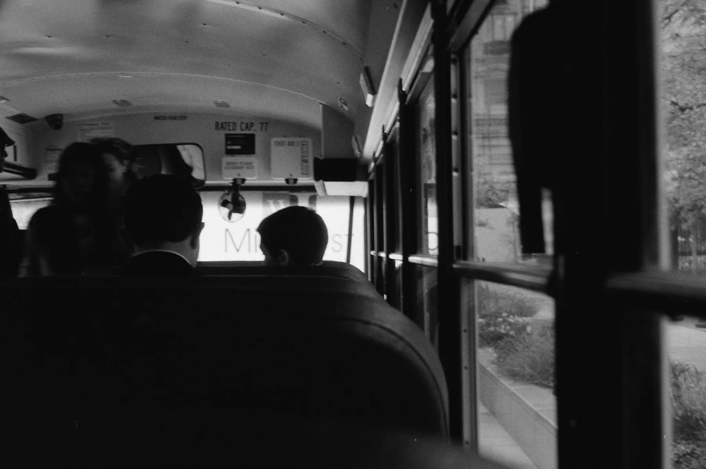
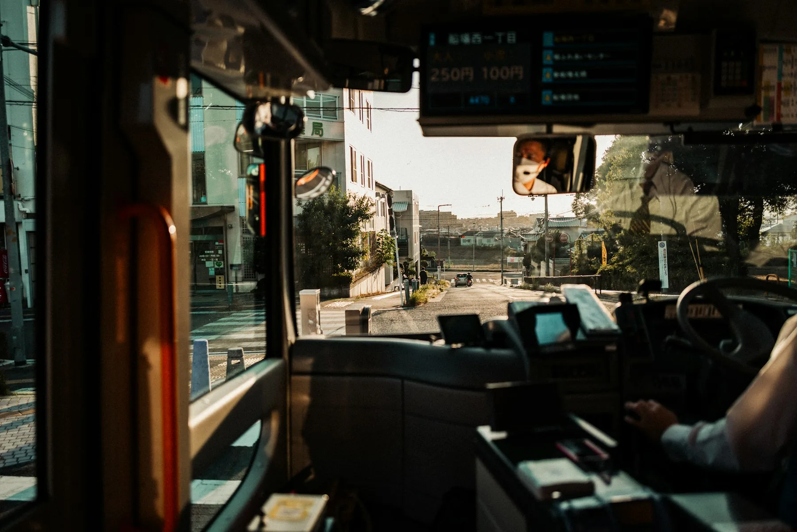

Everyday school runs
Morning pickup and afternoon return planned around the school, assigned stop and approved handoff.
Daily transport →From the neighborhood stop to the school gate. Find the right route, understand the safety standards, and keep your family’s school journey together.

Start with your area and school. Then review the stops, timing and coverage that fit your routine.
Find your school route New here? See how enrollment works →Morning pickup and afternoon return planned around the school, assigned stop and approved handoff.
Daily transport →After-school clubs, field trips and group journeys with their own passenger, timing and supervision needs.
Special journeys →Student profiles, route assignments, journey notices and plan records, connected in the parent workspace.
Parent guide →Preview sample coverage by area, school and journey direction.
Sample routes are shown for planning. The operator confirms available seats and stops.
Small routines. Shared confidence.A visible waiting point. A careful boarding routine. A school handoff everyone understands.
Before pickupReview the stop, scheduled time and collection arrangement.
During the rideFollow seating, belongings and onboard behavior guidance.
At the school gateUse the agreed arrival and dismissal handoff.
Useful information for the decisions families make before every school term.
Driver credentials, vehicle readiness, onboard safeguards and emergency procedures.
↗PLANS & POLICIESJourney coverage, sibling savings, payment information and the conditions that apply.
↗PARENT WORKSPACEExplore sample student profiles, route playback, notices and journey history.
↗Find help with routes, enrollment and plans. For an active journey, use the transport operator’s verified dispatch contact.
